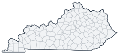

Historical county changes, 1790–1990 › Kentucky

| Name↕ | Unit↕ | Existed↕ | FIPS↕ |
|---|---|---|---|
| Adair County | county | 1810–1990 | 21001 |
| Allen County | county | 1820–1990 | 21003 |
| Anderson County | county | 1830–1990 | 21005 |
| Ballard County | county | 1850–1990 | 21007 |
| Barren County | county | 1800–1990 | 21009 |
| Bath County | county | 1820–1990 | 21011 |
| Bell County | county | 1870–1990 | 21013 |
| Boone County | county | 1800–1990 | 21015 |
| Bourbon County | county | 1790–1990 | 21017 |
| Boyd County | county | 1860–1990 | 21019 |
| Boyle County | county | 1850–1990 | 21021 |
| Bracken County | county | 1800–1990 | 21023 |
| Breathitt County | county | 1840–1990 | 21025 |
| Breckinridge County | county | 1800–1990 | 21027 |
| Bullitt County | county | 1800–1990 | 21029 |
| Butler County | county | 1810–1990 | 21031 |
| Caldwell County | county | 1810–1990 | 21033 |
| Calloway County | county | 1830–1990 | 21035 |
| Campbell County | county | 1800–1990 | 21037 |
| Carlisle County | county | 1890–1990 | 21039 |
| Carroll County | county | 1840–1990 | 21041 |
| Carter County | county | 1840–1990 | 21043 |
| Casey County | county | 1810–1990 | 21045 |
| Christian County | county | 1800–1990 | 21047 |
| Clark County | county | 1800–1990 | 21049 |
| Clay County | county | 1810–1990 | 21051 |
| Clinton County | county | 1840–1990 | 21053 |
| Crittenden County | county | 1850–1990 | 21055 |
| Cumberland County | county | 1800–1990 | 21057 |
| Daviess County | county | 1820–1990 | 21059 |
| Edmonson County | county | 1830–1990 | 21061 |
| Elliott County | county | 1870–1990 | 21063 |
| Estill County | county | 1810–1990 | 21065 |
| Fayette County | county | 1790–1990 | 21067 |
| Fleming County | county | 1800–1990 | 21069 |
| Floyd County | county | 1800–1990 | 21071 |
| Franklin County | county | 1800–1990 | 21073 |
| Fulton County | county | 1850–1990 | 21075 |
| Gallatin County | county | 1800–1990 | 21077 |
| Garrard County | county | 1800–1990 | 21079 |
| Grant County | county | 1820–1990 | 21081 |
| Graves County | county | 1830–1990 | 21083 |
| Grayson County | county | 1810–1990 | 21085 |
| Green County | county | 1800–1990 | 21087 |
| Greenup County | county | 1810–1990 | 21089 |
| Hancock County | county | 1830–1990 | 21091 |
| Hardin County | county | 1800–1990 | 21093 |
| Harlan County | county | 1820–1990 | 21095 |
| Harrison County | county | 1800–1990 | 21097 |
| Hart County | county | 1820–1990 | 21099 |
| Henderson County | county | 1800–1990 | 21101 |
| Henry County | county | 1800–1990 | 21103 |
| Hickman County | county | 1830–1990 | 21105 |
| Hopkins County | county | 1810–1990 | 21107 |
| Jackson County | county | 1860–1990 | 21109 |
| Jefferson County | county | 1790–1990 | 21111 |
| Jessamine County | county | 1800–1990 | 21113 |
| Johnson County | county | 1850–1990 | 21115 |
| Kenton County | county | 1840–1990 | 21117 |
| Knott County | county | 1890–1990 | 21119 |
| Knox County | county | 1800–1990 | 21121 |
| Larue County | county | 1850–1990 | 21123 |
| Laurel County | county | 1830–1990 | 21125 |
| Lawrence County | county | 1830–1990 | 21127 |
| Lee County | county | 1870–1990 | 21129 |
| Leslie County | county | 1880–1990 | 21131 |
| Letcher County | county | 1850–1990 | 21133 |
| Lewis County | county | 1810–1990 | 21135 |
| Lincoln County | county | 1790–1990 | 21137 |
| Livingston County | county | 1800–1990 | 21139 |
| Logan County | county | 1800–1990 | 21141 |
| Lyon County | county | 1860–1990 | 21143 |
| Madison County | county | 1790–1990 | 21151 |
| Magoffin County | county | 1860–1990 | 21153 |
| Marion County | county | 1840–1990 | 21155 |
| Marshall County | county | 1850–1990 | 21157 |
| Martin County | county | 1880–1990 | 21159 |
| Mason County | county | 1790–1990 | 21161 |
| McCracken County | county | 1830–1990 | 21145 |
| McCreary County | county | 1920–1990 | 21147 |
| McLean County | county | 1860–1990 | 21149 |
| Meade County | county | 1830–1990 | 21163 |
| Menifee County | county | 1870–1990 | 21165 |
| Mercer County | county | 1790–1990 | 21167 |
| Metcalfe County | county | 1860–1990 | 21169 |
| Monroe County | county | 1820–1990 | 21171 |
| Montgomery County | county | 1800–1990 | 21173 |
| Morgan County | county | 1830–1990 | 21175 |
| Muhlenberg County | county | 1800–1990 | 21177 |
| Nelson County | county | 1790–1990 | 21179 |
| Nicholas County | county | 1800–1990 | 21181 |
| Ohio County | county | 1800–1990 | 21183 |
| Oldham County | county | 1830–1990 | 21185 |
| Owen County | county | 1820–1990 | 21187 |
| Owsley County | county | 1850–1990 | 21189 |
| Pendleton County | county | 1800–1990 | 21191 |
| Perry County | county | 1830–1990 | 21193 |
| Pike County | county | 1830–1990 | 21195 |
| Powell County | county | 1860–1990 | 21197 |
| Pulaski County | county | 1800–1990 | 21199 |
| Robertson County | county | 1870–1990 | 21201 |
| Rockcastle County | county | 1810–1990 | 21203 |
| Rowan County | county | 1860–1990 | 21205 |
| Russell County | county | 1830–1990 | 21207 |
| Scott County | county | 1800–1990 | 21209 |
| Shelby County | county | 1800–1990 | 21211 |
| Simpson County | county | 1820–1990 | 21213 |
| Spencer County | county | 1830–1990 | 21215 |
| Taylor County | county | 1850–1990 | 21217 |
| Todd County | county | 1820–1990 | 21219 |
| Trigg County | county | 1820–1990 | 21221 |
| Trimble County | county | 1840–1990 | 21223 |
| Union County | county | 1820–1990 | 21225 |
| Warren County | county | 1800–1990 | 21227 |
| Washington County | county | 1800–1990 | 21229 |
| Wayne County | county | 1810–1990 | 21231 |
| Webster County | county | 1860–1990 | 21233 |
| Whitley County | county | 1820–1990 | 21235 |
| Wolfe County | county | 1870–1990 | 21237 |
| Woodford County | county | 1790–1990 | 21239 |
Note: Decimals in FIPS codes come from Forstall, who gives every county a code, including counties that no longer exist. A county abolished between 1930 and 1990 keeps the code it had. However, a county which was abolished prior to 1930 never received a code. Such a county is given the code of the county which precedes it alphabetically plus a decimal to hold its place in the list.
Source: Richard L. Forstall (1996), Population of States and Counties of the United States: 1790 to 1990, U.S. Bureau of the Census (public domain). Always check a row against the scan it links to.